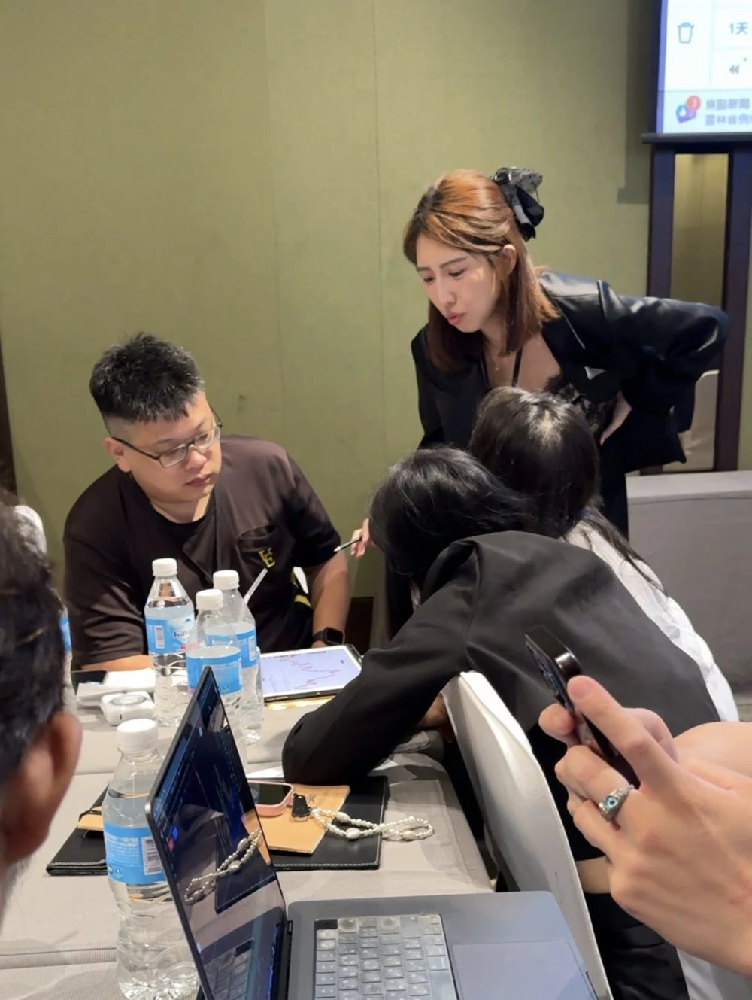
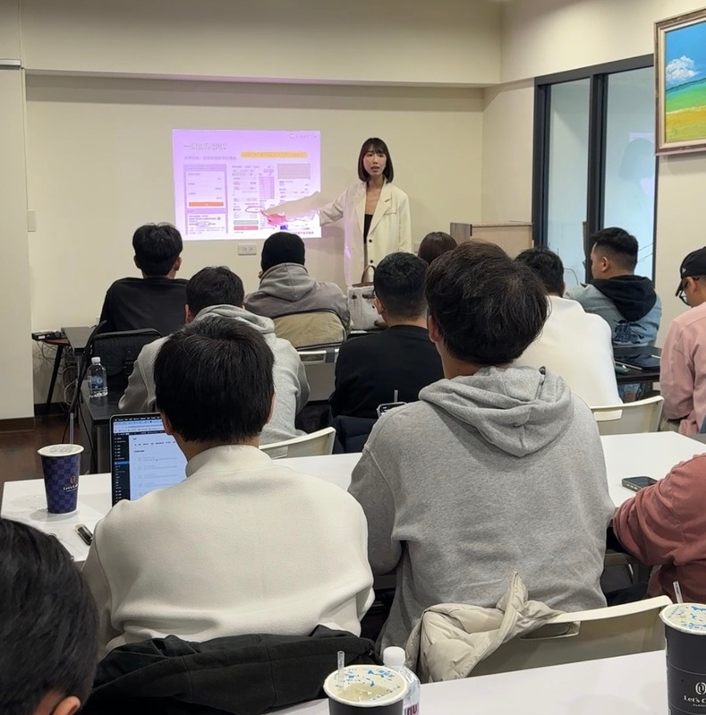

我很早就知道，以後想要的生活，要自己去爭取。
我家以前開雜貨店，國小就會幫忙補貨，賺十塊左右的零用錢。父親要我明白，以後自己的生活、房子和錢，都要靠自己。這句話，讓我從小就很想賺錢、做出成績。
國中被霸凌，我沒有告訴家裡，只想著要讓自己變強。後來讀了銘傳，畢業時背著五十萬學貸。2014 年進百貨工作，第三年還清了學貸。
當時我只想多賺一點、趕快還完。後來開始學理財，才慢慢發現：除了賺錢，錢要怎麼安排，也值得學。

我是 hanna
教路人會交易的 hanna
教路人會交易的 hanna
我曾經連 K 棒都看不懂，後來開始錄課、帶新手，把自己學會的事，一步一步教給別人。
從一個完全不懂的新手，
到陪你開始學習的人。
我的故事
當媽媽、學交易、開始教新手，很多事情，是一邊做、一邊學會的。這是我一路走到現在的故事。
從小到出社會
自己的生活，要有能力負責。我家以前開雜貨店，國小就會幫忙補貨，賺十塊左右的零用錢。父親要我明白，以後自己的生活、房子和錢，都要靠自己。這句話，讓我從小就很想賺錢、做出成績。
國中被霸凌，我沒有告訴家裡，只想著要讓自己變強。後來讀了銘傳，畢業時背著五十萬學貸。2014 年進百貨工作，第三年還清了學貸。
當時我只想多賺一點、趕快還完。後來開始學理財，才慢慢發現：除了賺錢，錢要怎麼安排，也值得學。
2020 年，懷孕期間
還有很多不會，就開始找方法。2020 年結婚、懷孕，工作很忙，婚姻也遇到問題。我曾經一個人在公園哭，想到肚子裡的孩子，覺得自己讓他承受了這些情緒。
小時候看過媽媽不快樂的樣子，所以我一直記著：「快樂的媽媽，才能養出快樂的孩子。」想照顧好孩子，我也得先讓自己好好生活。
那時正逢疫情，我開始學接案、網拍、賣口罩、電商，找自己能做的事。我沒有等生活的問題都解決了，才開始學習。很多事情不會，就一邊找資料、一邊試。
2021 年，從小白開始
一邊成為媽媽，一邊學習交易。2021 年 4 月，我加入當時的 ACDC 學院，開始接觸加密貨幣。那時還在懷孕，K 棒、趨勢、市場心理和資金管理，全都從頭學。
剛開始，我的交易也有虧損；同時透過推廣、介紹別人加入取得收入，才撐過初期。推廣收入和交易表現是兩回事，我沒有一進市場就會交易。
同年 6 月，兒子出生，坐月子的費用也是自己付的。想到孩子和之後的生活，我開始更在意：除了增加收入，能不能也有時間陪他長大？
後來遇到市場大跌，我花更多時間研究 K 棒、趨勢和買賣雙方的心理，練習看懂市場、找進出場依據。資金管理、交易紀律和虧損控制，也要一起學。這些都成了我後來教新手的基本功。

2021 年底到 2022 年
從自己學，到把學過的整理給別人。2021 年底，我開始做新手教學。沒有攝影棚，我跟妹妹就在不到五坪的房間裡，用膠帶把綠幕貼上牆，參考網路影片，手寫腳本、錄課。
以前在百貨學的溝通、做團隊教育訓練和取得講師資格的經驗，這時都用上了。我自己也當過新手，知道一串名詞丟過來，不一定聽得懂。所以聽不懂就拆小一點，太抽象就換成生活裡的例子。
2022 年 5 月，我正式離婚。照顧孩子、處理生活和做教學，一直交錯進行。我們也持續整理學習地圖、作業和陪跑，讓新手遇到問題有地方問。
從那間小房間開始，新手班累積辦了兩百多梯次。以前我很在意表現和收入，後來更在意自己能給別人什麼。能把一個人不懂的地方講清楚，是我願意繼續教的原因。

現在，教路人會交易的 hanna
我不怕別人問，只怕沒人問。教過很多新手之後，我開始走到路人面前。對方不認識我，也不一定接觸過交易，我就用手機、小島遊戲的三道題目，從生活裡的例子開始講。
「Hanna 翻譯」系列也是一樣，把買方、賣方的心理講成白話，讓新手理解價格變化背後的思考。先看方向，再進場，是我一直想傳達的觀念。
我不怕別人問，只怕沒人問。完全沒學過，有時候連怎麼問都不知道。我會從基本名詞和操作開始，再陪你把不懂的地方拆開。現在學院也有實戰、題庫、線下課和問答資源，可以接著學。
從生活裡的例子開始，
把交易觀念講清楚。
學習最後，還是回到生活
我持續替兒子定期投入比特幣，也把自己學過的金錢與資產觀念，放進家庭生活裡。
我想增加收入，也想有時間陪兒子去公園、看他長大。你如果也想認識加密貨幣，可以先看看我準備的新手內容。
看看課程與學習資源學院與課程
我在 2021 年加入的 ACDC 學院，現在叫「幣聖課」。從自己上課，到後來帶新手，我一直在這個體系裡學習、做教學。現在學院有五個階段的課程，也有問答、分析與週報資源。
下面整理了各階段會學什麼、需要哪些參與條件，你可以先看自己目前適合從哪裡開始。
從線上學習，到線下相聚。
點開每個階段，看課程內容與參與條件。
適合第一次接觸加密貨幣的人。包含群內新手操作教學；看完教學影片仍有問題，也可參加線上新手課程。
完成註冊，免費加入。
透過前導影片與三堂實戰班課程，進一步理解指標與交易判斷。
新手班畢業，或合約帳戶資產滿 300U。
實戰班畢業，且合約帳戶資產大於 300U。
實戰班畢業，且合約帳戶資產大於 300U。
學習資源
我有親自錄製的新手教學，從基本操作開始說明。
進階學習也有討論群、實戰問答與週報等資源，
各階段的參與方式，可以先看課程說明。
學員討論行情、分享規劃，老師協助修正觀念。可以看見別人的思考方式，再回頭檢查自己的判斷依據。
遇到技術分析或盤面問題，可以在群內提問，由老師針對問題解答，讓不理解的地方有機會被拆開說明。
整理幣圈影響因素、國內外政策、重要金融數據與機構報告，讓看盤以外的市場資訊也有整理過的入口。
先看看實際內容
你可以先看看教學畫面與策略示例，了解課程會怎麼說明操作和判斷依據。圖表為教學示例，並非交易建議。
教學現場
下面是我們實際上課與交流的紀錄。
從題庫練習、大型線下課，到小班檢討，
你可以先看看不同課程怎麼進行。
大型線下課程
線上／線下題庫班
線下小型私教班
這裡放了兩位學員的課後心得，
可以點開看看他們從哪裡開始學，以及上課後的感受。
從這裡開始
我有親自錄製的新手教學，從常見名詞與交易所操作等入門內容開始。
加入 LINE 可以領取教學資料，也可以了解目前課程與參與方式。
先看內容、認識我怎麼教，再決定是否適合自己。
你可能想先問
一階內容從基本名詞、交易所操作、防詐騙、錢包與風險揭露開始。你可以先領取新手教學資料；看完影片仍有疑問，也有線上新手課程與群內問答資源。
一階為「完成註冊，免費加入」。進階課程與社群各有參與條件，不能直接視為全部免費。實際費用、近期安排及可使用的資源，都可以在 LINE 問我。
本頁的 LINE 按鈕是了解教學與參與方式的聯絡入口。你可以先詢問。課程欄位列出的資產與交易紀錄條件，是原課程頁的進階資格說明，請先了解內容與風險，再自行決定是否參與。